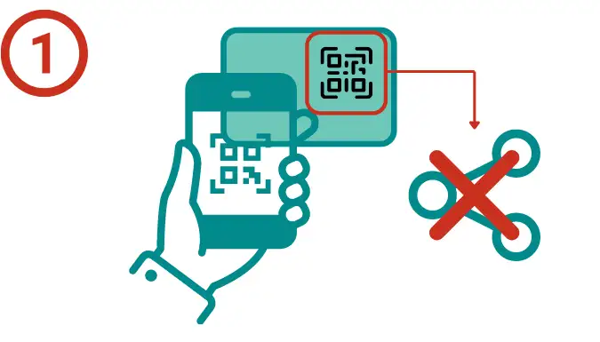

Benötigen Sie die Produktion von Inhalten für Ihren Audioguide?
Warum Nubart?
Weil Audioguide-Geräte eine komplexe Logistik erfordern und Elektronikmüll erzeugen.
Weil eine Audioguide App teuer und nicht monetarisierbar ist und nur etwa 2% der Besucher sie herunterladen.
So einfach wie es nur geht
Warum ein Audioguide-Gerät, wenn doch jeder ein Smartphone hat?
Einfach zu bedienen
Besucher müssen nur den QR-Code scannen, um auf den Inhalt zuzugreifen. Dank unserer innovativen Scroll-Oberfläche ist das Auffinden von Stationen auch für digital Unerfahrene einfach und intuitiv.
Monetarisierbar
Im Gegensatz zu Apps kann eine Nubart-Karte verkauft werden, da sie nicht übertragbar ist. Nubart kann eine Einnahmequelle für Ihr Museum sein!
Geeignet für Sponsoring
Im Gegensatz zu Geräten oder Apps ermöglicht Nubart das Aufdrucken von Sponsorenlogos auf der Audioguide-Karte.

Digitales Tool für Führungen
Optional können Sie ein Modul mit einem digitalen Gruppenführungssystem integrieren. So ersparen Sie sich den Kauf teurer Führungsanlagen.
Sehr hohe Take-up-Rate (TUR)
Unsere Karten erzielen einen TUR von 10-20%, wenn sie separat verkauft werden, und 45-85%, wenn sie im Eintritt eingepreist sind.
Offline-Modus
Ihr Museum liegt im Funkloch? Nubarts Audioguides bieten einen innovativen Offline-Modus. Nach dem ersten Scannen des QR-Codes kann der Besucher auch in Bereichen ohne Internetverbindung jederzeit auf den vollständigen Audioguide zugreifen.
Umweltfreundlich
Elektronische Geräte verursachen Elektroschrott. Nubarts Audiokarten werden auf FSC-zertifiziertem Karton gedruckt und sind zu 100% CO2-kompensiert.
Nur Audio? Oder ein kompletter Multimedia-Guide?
Videos, Slider, modulare Struktur, Offline-Modus, herunterladbare Dateien, Fernsteuerung des Audioguides,
Möglichkeit zum Hochladen von Dateien oder zum Hinterlassen von Sprachnachrichten...
All dies und mehr kann in einen
Nubart
Audioguide integriert werden.
Monetisieren Sie Ihre Audioguide-Karten
Wie machen wir unsere Audioguide-Karten nicht übertragbar?
Ein Audioguide stellt einen wichtigen zusätzlichen Service Ihres Museums dar. Allerdings zeigt die Erfahrung, dass nur 15–30 % Ihrer Besucher diesen Service nutzen wollen. Die Produktion einer Audioführung ist teuer und Sie möchten vielleicht, einen Teil der Kosten wieder hereinholen und nicht nur dem Steuerzahler überlassen. Vielleicht sehen Sie Ihre Audioguides ja auch als Einnahmequelle für neue Projekte.
Wenn Sie den gleichen QR-Code für alle Besucher bereitstellen, ist eine Monetarisierung des Audioguides nicht möglich, da diese Links öffentlich sind und geteilt werden können.
Bei Nubart haben wir ein System namens Lightweight Web Access Control patentieren lassen. Dadurch ist es uns
möglich,
das Gerät des Benutzers anonym zu identifizieren. Der rechtmäßige Besitzer der Audioguide-Karte kann jederzeit wieder auf die
Inhalte zugreifen, jedoch ist eine Weitergabe an andere ausgeschlossen. Dadurch wird Ihr Inhalt wertvoller, unabhängig davon, ob
Sie
die Karten separat verkaufen oder in die Eintrittsgebühr einbeziehen möchten.
Die QR-Codes auf den Nubart-Karten sind zwar nicht übertragbar, können aber jederzeit von ihren rechtmäßigen Besitzern wiederverwendet werden. Dies ist wichtig, da die Möglichkeit, die Karte zu behalten und den Audioguide wiederzuverwenden, ein wichtiges Verkaufsargument für Besucher ist und die Nutzungsrate erhöht.
Wenn Sie auf die Karten verzichten möchten, können wir Ihnen die Links oder QR-Codes online über unsere API zur Verfügung stellen. So können Sie sie in Ihr Ticketsystem integrieren.
Wie funktioniert es?
Unsere QR-Codes sind nicht übertragbar...

-
Nicht übertragbar: Das erste Gerät kann beim Scannen des QR-Codes direkt
auf
den Audioguide zugreifen.
Der QR-Code ist eindeutig und kann nicht öffentlich geteilt werden.
Die meisten Besucher gehen nicht weiter.
...aber wiederverwendbar

- Wiederverwendbar: Der Zugriff auf die Inhalte kann erneut von einem zweiten Gerät aus erfolgen. Dazu ist ein Zugriffslink per E-Mail erforderlich. Sobald der Link angeklickt wurde, werden die Zugriffsrechte auf das zweite Gerät übertragen. Der Link kann nicht weitergegeben werden.
- Besucher, die im Besitz der Karte sind, können weiterhin beliebig oft von jedem anderen Gerät aus auf die Inhalte zugreifen. Der Zugriffslink wird immer an die zuvor angegebene E-Mail-Adresse gesendet. Diese E-Mail-Adresse kann nicht geändert werden.
Was Museumsbesucher über die Audioguides von Nubart sagen
Benutzerbewertungen
Fordern Sie eine Mappe mit Mustern von Nubart-Audioguide-Karten an
Möchten Sie unsere Karten kostenlos testen?

Füllen Sie dieses Formular aus, und wir senden Ihnen diese per Post zu:
Geolokalisierungsfunktionen in den Audioguides von Nubart
Möchten Sie Ihren Besuchern den Weg zeigen?
Geo-scrolling, interactive Karten mit Standortanzeige, Overlay mit Grundriss für den Innenbereich...
Unser Geolokalisierungspaket deckt praktisch alle Navigationsanforderungen Ihrer Besucher ab.
Besucher können eine interaktive Karte mit allen Stationen im Audioguide öffnen. Ihr Standort wird angezeigt.
Jede geolokalisierte Station des Audioguides verfügt über eine eigene Schaltfläche, um sich den Standort der Station auf der Karte anzeigen zu lassen.
Im Außenbereich können unsere ortsbezogenen Audiotracks automatisch hochscrollen, wenn sich Besucher einer bestimmten Station nähern. In Android wird dieser Prozess durch eine leichte Vibration des Mobiltelefons verstärkt.
Wir können ein Overlay mit dem Grundriss Ihres Hauses einfügen, um Navigation in Innenräumen zu unterstützen.
Sehen Sie Nubarts interaktive Karten in Aktion

Einfache Publikumsforschung mit Nubarts Audioguide-Kärtchen
Möchten Sie Ihre Besucher besser kennen lernen?

Besucherforschung im Museum, ohne aufdringlich zu sein
Nubarts Karten sind nicht nur ein innovativer Audioguide, der Ihrem Publikum einen mehrsprachigen Service bietet, sondern auch ein unaufdringliches Instrument zur Erhebung von Daten. Über die Smartphone-Browser können Sie viel über Ihr Publikum erfahren, aber immer anonym und DSGVO-konform.
Als Nubarts Kunde erhalten Sie Zugang zu Ihrem eigenen, passwortgeschützten Kundenbereich. Dort erhalten Sie eine statistische Übersicht mit Daten über die Nutzung des Audioguides. Unsere kostenlosen Berichte enthalten, u. a.:
- Herkunftsland der Besucher
- Muttersprache der Besucher
- Besucher pro Tag und Tageszeit
- Wie lange bleiben Ihre Besucher
- Angabe der prozentuell meistgehörten Spuren
Nubart hat ein integriertes Feedback-Formular für die Besucherforschung
Lassen Sie Ihre Besucher zu Wort kommen
Meinungsumfrage direkt im Audioguide
Unsere Datenberichte enthalten wertvolle, anonyme Informationen über Ihre Besucher und ihr Verhalten. Aber gewisse Informationen lassen sich nicht automatisch ermitteln: dazu müssen Besucher direkt befragt werden.
Aus diesem Grund findet der Besucher am Ende des Audioguides einen kurzen Fragebogen mit fünf Fragen. Zwei davon stehen fest:
- Bewertung der Ausstellung von 1 bis 5.
- Kommentarfeld für freie Anmerkungen über die Ausstellung, die Sammlung oder den Audioguide.
Besucher, die im Guide eine gute Bewertung von 4 oder 5 abgeben, können aufgefordert werden, auch in Google eine Bewertung zu hinterlassen.
Sie oder Ihre Mitarbeiter können Besucheranmerkungen in Echtzeit per E-Mail erhalten.
Die anderen drei Fragen kann das Museum frei aus einer langen Liste aussuchen. Um die Qualität unserer Daten zu gewährleisten, kann der Besucher nur ein einziges Mal antworten, was durch unsere individuellen Codes pro Karte sichergestellt wird. Unvollständige Antworten werden von uns ebenfalls registriert.

Kein Problem! Wir organisieren alles für Sie. Wir haben eine große Auswahl an Profis, die für Sie Skripte,
Übersetzungen oder Tonaufnahmen anfertigen.
Sorgen wegen der Kosten? Nicht nötig!
Bei Nubart gibt es äußerst praktische Geschäftsmodelle
Nubart als Produkt
Sie bestellen einfach eine bestimmte Anzahl personalisierter Karten. Sie können Nubart auch mit der Produktion des Inhalts
beauftragen. Unsere Karten sind unbegrenzt gültig und Sie können sie (entweder kostenlos als Teil des Eintritts oder zum
Verkauf) verteilen, bis sie aufgebraucht sind. Ideal für kleine Museen oder Projekte
Audioguide - ohne monatliche
Gebühren!
Einnahmebeteiligung
Da wir den eindeutigen Code auf den Karten anonym zurückverfolgen können, wissen beide Seiten genau, wie viele Karten
verwendet
wurden, und wir können diese monatlich abrechnen. Wir versorgen Sie kontinuierlich mit Karten und können die Produktion von
Inhalten in den Kartenpreis einbeziehen.
Einnahmen ohne Vorkosten!
Subskription
Möchten Sie die Karten in den Eintrittspreis integrieren? Wir liefern Ihnen die Karten kostenlos im Voraus und stellen Ihnen
monatlich nur die von Ihnen ausgegebenen Karten in Rechnung. Wir können die Produktionskosten der Inhalte in den Kartenpreis
einbeziehen. Unsere Nutzungsrate ist enorm (45-85%).
Service ohne Vorkosten!
Kunden, die die Audio Guides von Nubart verwenden
Eine Auswahl von Nubarts Audioguide-Kunden